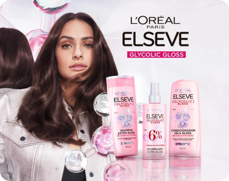

Novo Elseve Glycolic Gloss
Luta contra Cabelo poroso e sem brilho? Para ajudar a trazer todo o brilho para o seu cabelo, Elseve apresenta a nova linha Glycolic Gloss. Contando com um ativo já queridinho no universo de skincare – o ácido glicólico. É mais que brilho, é ultra gloss!
Conheça os produtos favoritos de L’oréal Paris